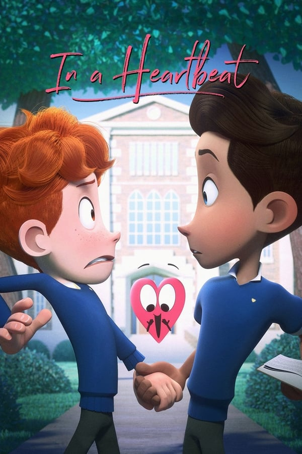

O segredo de Brokeback Mountain
9.8Sinopse
Um conto de amor sobre o relacionamento de dois jovens, Ennis Del Mar, um rancheiro de Wyoming e Jack Twist, um vaqueiro de rodeio, que se encontram no verão de 1963, e nos anos seguintes lutam secretamente para entender e se manter o amor que nutrem um pelo outro.
Moonlight: Sob a Luz do Luar
9.6Sinopse
Uma história atemporal de relações humanas e autoconhecimento, o drama Moonlight narra a vida de um jovem afro-americano desde a infância até a vida adulta e a luta dele para encontrar seu lugar no mundo enquanto cresce num bairro violento de Miami.
Hoje eu quero voltar sozinho
8.2Sinopse
Leonardo (Ghilherme Lobo), um adolescente cego, tenta lidar com a mãe superprotetora ao mesmo tempo em que busca sua independência. Quando Gabriel (Fabio Audi) chega na cidade, novos sentimentos começam a surgir em Leonardo, fazendo com que ele descubra mais sobre si mesmo e sua sexualidade.Azul é a cor mais quente
7.2Sinopse
Adèle (Adèle Exarchopoulos) é uma garota de 15 anos que descobre, na cor azul dos cabelos de Emma (Léa Seydoux), sua primeira paixão por outra mulher. Sem poder revelar a ninguém seus desejos, ela se entrega por completo a este amor secreto, enquanto trava uma guerra com sua família e com a moral vigente.Pássaro negro
6.8Sinopse
Um jovem cantor luta contra sua sexualidade e com o tratamento estranho dos outros em uma pequena comunidade batista do sul dos EUA.
Punks
5.0Sinopse
Um quarteto de homens negros gays procurando amor em todos os lugares errados. Marcus, um romântico em busca do homem ideal que tem o hábito de assustar seus pretendentes com sua paranóia de contrair Aids se apaixona pelo seu vizinho Darby apesar dele ter uma namorada.Rafiki
5.1Sinopse
Kena e Ziki são grandes amigas e, embora suas famílias sejam rivais políticas, as duas continuaram juntas ao longo dos anos, apoiando uma a outra na batalha pela conquista de seus sonhos. A relação de amizade transforma-se em um romance que passa a afetar a rotina da comunidade conservadora em que vivem. As jovens terão que escolher entre experienciar o amor que partilham, ou se distanciar em função de uma vida segura.
Boy Erased: Uma Verdade Anulada
8.5Sinopse
O jovem Jared, de apenas 19 anos, mora em uma pequena cidade conservadora do Arkansas. Ele é gay e filho de um pastor da Igreja Batista. Em um certo momento de sua vida, Jared é confrontado pela família e precisa escolher entre arriscar perdê-la ou entrar em um programa de terapia que busca tentar "curar" sua homossexualidade.
Com amor, Simon
9.8Sinopse
Aos 17 anos, Simon Spier aparentemente leva uma vida comum, mas sofre por esconder um grande segredo: nunca revelou ser gay para sua família e amigos. E tudo fica mais complicado quando ele se apaixona por um dos colegas de escola, anônimo, com quem troca confidências diariamente via internet.Você Nem Imagina
8.4Sinopse
Tímida e estudiosa, Ellie ajuda o atlético Paul a conquistar sua crush. Mas a improvável amizade entre os dois se complica quando Ellie se apaixona pela mesma garota.

Num piscar de Olhos
9.8Sinopse
Um jovem estudante se vê obrigado a sair do armário pelo seu próprio coração que, literalmente, sai do peito para correr em busca do menino dos seus sonhos. Ansiosos?Alex Strangelove
7.1Sinopse
Alex Truelove é um aluno exemplar do último ano do Ensino Médio. Ele tem um grande futuro pela frente, mas antes de se formar ele quer alcançar o último marco da adolescência: perder a virgindade com a sua namorada, Claire. Tudo se complica quando ele conhece Elliot, um charmoso menino gay que sem querer põe Alex em uma jornada de autodescoberta.Garotos de Programa
7.6Sinopse
Dois jovens vivem nas ruas de Portland no meio das drogas e da prostituição. Scott só quer envergonhar sua família. Mike sofre de narcolepsia e é apaixonado por Scott. Eles decidem viajar para a Itália em busca da mãe perdida de Mike.The Rocky Horror Picture Show
8.7Sinopse
Um jovem casal fica em um local isolado após o seu carro ter o pneu furado numa tempestade, e precisam se abrigar na residência bizarra do Dr. Frank-N-Furter.Handsome Devil
6.3Sinopse
Ned e Conor são pessoas completamente diferentes, com personalidades como água e vinho. Um é uma estrela do rugby super popular do time, o outro é considerado um perdedor por todos. A contragosto, eles são forçados a dividir um quarto em sua escola e, inesperadamente, formam uma amizade improvável.Priscilla, a Rainha do Deserto
8.0Sinopse
Anthony concorda em levar seu show para a estrada, ele convida os travestis Adam e Bernadette para acompanhá-lo. No seu ônibus todo colorido, chamado Priscilla, os três viajam pelo deserto australiano fazendo shows para plateias entusiasmadas e homofóbicos. Porém quando os amigos de Anthony descobrem a verdade da viagem, problemas acontecem.Clube de Compras Dallas
9.8Sinopse
Ron Woodroof, um eletricista heterossexual de Dallas, foi diagnosticado com AIDS em 1986, durante uma das épocas mais obscuras da doença. Embora os médicos tenham lhe dado apenas alguns meses de vida, Woodroof se recusou a aceitar o prognóstico e, procurando tratamentos alternativos, ele passa a contrabandear drogas ilegais do México.Orações Para Bobby
8.9Sinopse
Mary é uma religiosa que segue à risca todas as palavras da bíblia. Quando seu filho Bobby revela ser gay, ela imediatamente leva o filho para terapias e cultos religiosos com o intuito de “curá-lo”. No entanto, Bobby não suporta a pressão e se atira de uma ponte, encerrando sua vida aos 20 anos de idade. Depois desse fato, Mary descobre um diário do garoto e passa a conhecer melhor o mundo dos homossexuais, tornando-se, logo, uma ativista em prol dos diretos gays. Baseado em uma história real.A Garota Dinamarquesa
9.5Sinopse
Na Copenhague de 1926, os artistas Einar e Gerda Wegener se casam. Gerda então decide vestir Einar de mulher para pintá-lo. Einar começa a mudar sua aparência, transformando-se em uma mulher, e passa a se chamar de Lili Elbe. Com o apoio, ainda que conturbado, da esposa, um Einar deprimido passa por uma das primeiras cirurgias de mudança de sexo da história para tentar se transformar por completo em Lili e recuperar o gosto pela vida.